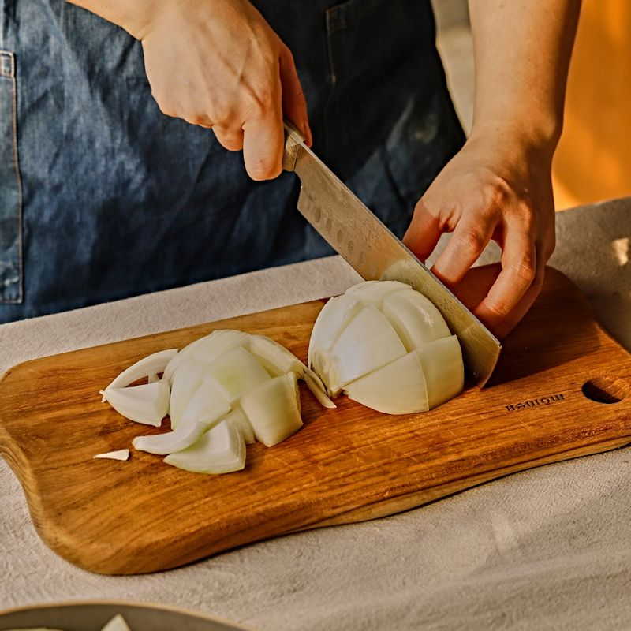

 양파는 깍둑썰고, 대파는 송송 썰어주세요. 오이는 채를 썰어 준비해주세요.
 웍 팬에 식용유와 춘장을 넣고 3분간 볶아주세요. 볶은 춘장은 따로 덜어주세요.
웍 팬에 식용유와 춘장을 넣고 3분간 볶아주세요. 볶은 춘장은 따로 덜어주세요.
(tip. 춘장을 볶으면 떫은맛을 제거할 수 있어요. 춘장에서 고소한 냄새가 나면 완성이에요)
춘장을 볶은 기름에 다진 마늘과 대파를 넣고 볶아 향을 낸 후 양파를 넣고 2분간 볶아주세요.
양파에 볶은 춘장과 후춧가루, 생강가루, 설탕을 넣고 표고 불린 물을 조금씩 추가하며 볶아주세요.
(tip. 건표고 4~5개에 물 2컵을 넣고 하루정도 불려 준비해주세요)
전분 물을 넣고 저어 짜장 소스를 완성해주세요.
끓는 물에 면을 넣고 8분간 삶은 후 흐르는 물에 헹궈 전분기를 빼주세요.
 그릇에 삶은 면과 짜장 소스를 담고 채를 썬 오이를 올려 맛있게 즐겨주세요.
그릇에 삶은 면과 짜장 소스를 담고 채를 썬 오이를 올려 맛있게 즐겨주세요.
(tip. 면이 너무 차갑지 않도록 마지막에 뜨거운 물로 헹궈주세요)